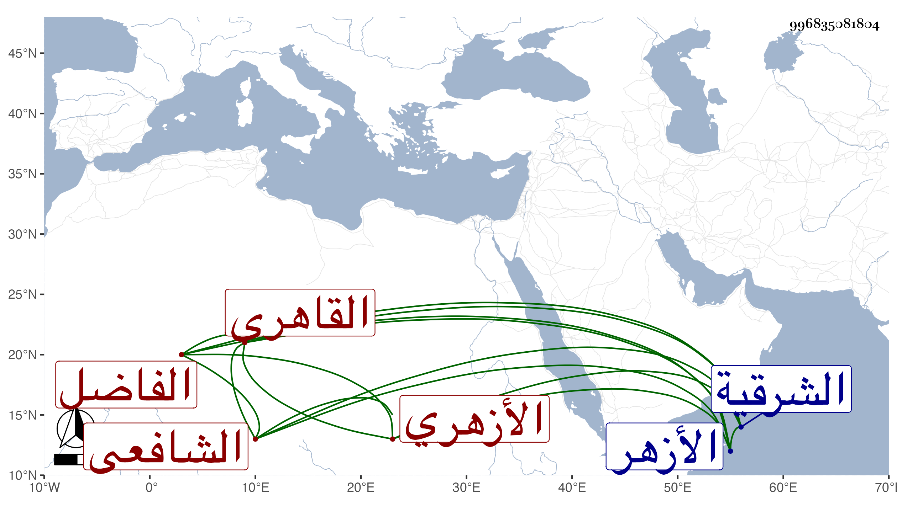

0902Sakhawi.DawLamic.ITO20230111-ara1.EIS1600.996835081804
Biography ID: 996835081804
899
إسماعيل بن إبراهيم بن محمد بن علي الفاضل مجد الدين بن برهان الدين الحياني نسبة لمنزل حبان من الشرقية ثم القاهرى الأزهري الشافعي . ولد بها وتحول منها وهو بالغ إلى الأزهر فحفظ القرآن والمنهاج الفرعي والأصلي وألفية النحو وبحث المنهاج على الوروري وكذا قرأ عليه القطر في النحو وحضر دروس المناوي والعبادي والبكري وزكريا والمقسي والجوجري وآخرين من طبقتهم ودونها وفهم في الفقه وفي العربية في الجملة وأدب الكمال بن ناظر الخاص ولذا استقر به في مشيخة التصوف بمدرسة أبيه بعد المحيوي الدماطي وبعنايته في الخطابة بجامع الخطيري مع مباشرته عوضا عن عز الدين المناوي أو يحيى البكري بل ناب في الإمامة بالأزهر مع كثرة تردده في النية ولكنه خير والغالب عليه الصفاء واليبس والميل إلى التحصيل وربما أقرأ بل كان يكثر الأبناء من تصحيح ألواحهم عليه ونعم الرجل . مات بعد ضعف طويل في شوال سنة خمس وتسعين عن نحو السبعين ظنا ، واستقر بعده في الجمالية على ابن قريبه المحلي .
